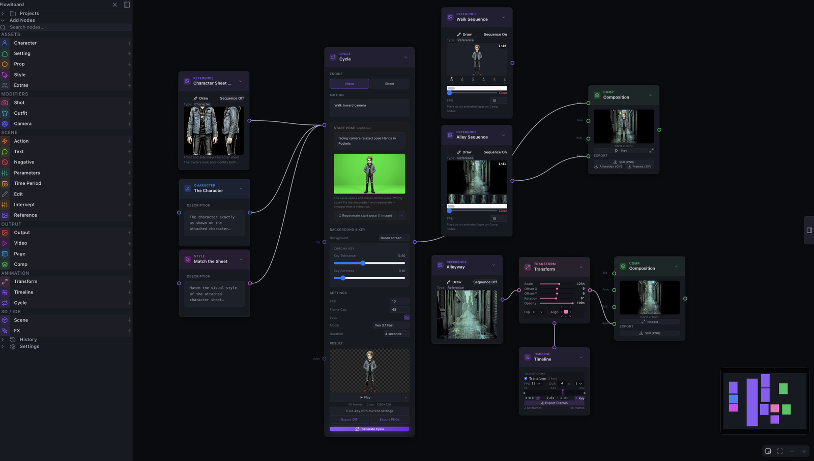

Cycle Node Build Notes
Cheap before expensive as a design rule, a model API that changed under me mid-testing, green light that no tolerance slider could reach, and a GIF encoder that froze the UI. The parts of the Cycle node worth writing down.

The Cycle node shipped this week, on the web app and the desktop app together (1.1.0), with a set of same-week follow-ups landing right behind it (1.2.0). The manual chapter is up and illustrated, and it carries an honest note that the feature is under active development. These are the parts of the build I think are worth writing down.
Cheap before expensive
The single rule that shaped the whole node is this: iterate on the cheap artifact before you commit to the expensive one. Everything else is downstream of that.
I run FlowBoard on my own API keys, so I feel the cost of each generation directly. On my keys, a still image runs about two cents and a Veo clip runs about fifty cents. Those are rough BYOK numbers from my own usage, not FlowBoard's credit prices, but the ratio is the point: a video generation costs roughly twenty-five images. So the node is built to never let you spend the video price on a mistake you could have caught at the image price.
The whole cycle hangs on the start pose. If the pose is wrong, the clip is wrong, and you paid the clip price to find out. So the start pose gets its own generate, inspect, regenerate loop, with a full-screen inspector, entirely at image prices. Only an approved pose is allowed to ride into the video request.
Here is the anecdote that made me sure this was right. An early pose generation gave the character three arms. If that had gone straight into a Veo request, I would have paid fifty cents to animate a three-armed man, then paid again to try to fix him. Instead I saw it in the pose inspector, regenerated, and moved on for a couple of cents. The workflow exists so that the expensive step only ever sees material you have already approved.
The API moved while I was testing
Building against a hosted model means building against a moving target. Partway through testing, Veo 3.1 Fast started rejecting first-plus-last-frame interpolation server-side. The exact response was "your use case is currently not supported." This was a capability that had tested fine months earlier. Nothing in my code changed; the model's contract did.
So the node now detects that rejection and falls back automatically to first-frame-only pinning. You still get a clip driven by your approved start pose; you just lose the ability to also pin the end frame when the backend has decided not to offer it. The lesson I took from this is not a clever one, but it is a real one: when you build on someone else's model, treat every capability as revocable and give yourself a fallback before you need it.
Short prompts beat choreography
My first instinct with motion was to over-specify it. I wrote prompts like a shot list: chamber the leg, extend, hold, retract, recover. A video model does not read that as a description of a motion. It reads it as a schedule, and it tries to execute every beat literally, and it runs out of clip before it finishes the list. You get a rushed, clipped performance that never returns to the start.
Short structural phrasing wins. The prompt that actually works looks like this:
single high side-kick and back to original pose then holdThat gives the model a shape with a beginning, a peak, and a return, and it lets the model fill in the frames. It also composes better as a loop, because "back to original pose then hold" is telling the model to end where it started. The templates in the node stay universal; the specificity lives in the text you edit.
Chroma key alone is not enough
Keying the character off the green background is the obvious step, and it is not the hard part. The hard part is the green that is not the background at all: the green bounce light that the green screen throws onto the character, baked into the silhouette as opaque pixels that are genuinely part of the figure. No tolerance slider reaches that, because widening the tolerance to catch the rim starts eating the character.
The fix is a matte-edge despill pass that only touches the edge. First erode the soft halo. Then clamp green on an edge band only a couple of pixels deep, right where the bounce light lives. Interiors are left alone, which matters, because the character wears a green jacket in some frames and I very much did not want the despill to eat it. Green on the edge is spill; green in the middle is wardrobe. The pass is built to tell them apart. There is also a noise-tolerant auto-crop on top of it, so a stray keyed pixel does not blow the crop out to the full canvas.

The GIF export froze the UI, and why
This is the bug I am least proud of and most glad I caught. The GIF exporter initially encoded on the main thread. The reason was not laziness; it was that wiring gif.js's worker properly ran into a bundler issue, and encoding on the main thread was the path that compiled. It worked fine on a two-frame test.
At composition scale it froze the browser solid. Encoding dozens of high-resolution frames on the main thread blocks the very thread that draws the UI, so the whole app locks up for the length of the encode. The fix was to bundle gif.js's worker through Vite's ?url imports, which sidesteps the original bundler problem and gets the encode back onto a worker where it belongs. I verified it against production at forty frames of 1080p, which is well past the scale that used to lock everything up.
One more bug the review process caught before merge: an export canvas-aliasing bug that would have made every exported GIF a stack of identical final frames. A per-task code review flagged it. That is the kind of bug that ships silently, and then every animation you export is secretly a still.
What it is now
The node exists, it is in the web app and the desktop app, and the manual documents it. It is also, by the manual's own note, under active development, and I would rather say that than pretend otherwise. What is solid is the shape: cheap iteration on the pose, a fallback when the model API changes underneath me, prompts that describe a shape instead of a schedule, an edge-only despill that respects green jackets, and an encoder that no longer holds the UI hostage. The rest is the ordinary work of a young feature getting older.